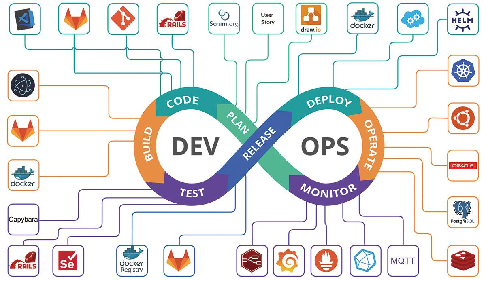
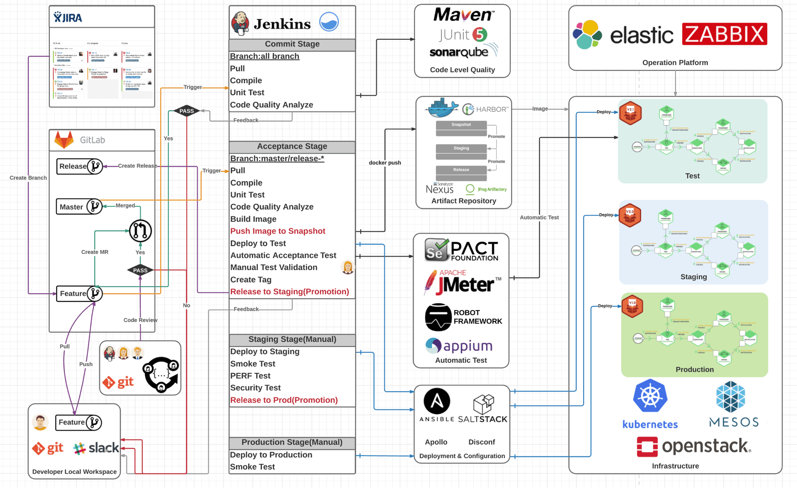

DevOps
DevOps 介绍：
2009 年比利时工程师(Patrick Debois、 帕特里克·德布瓦)提出了 DevOps 的概念，后被广泛引用。
DevOps 的秘密来源于它的名字所代表的两种角色——开发（Development）和运维（Operations）。那么这两种角色之间究竟有什么问题呢？我们从软件工程诞生以来所历经的三个重要发展阶段说起。
DevOps 是针对企业中的研发人员、运维人员和测试人员的工作理念，是指导他们在应用开发、代码部署和质量测试等业务落地的整条生命周期中的协作 和沟通的最佳实践理念，DevOps 强调整个组织的合作以及交付和基础设施变更的自动化、从而实现持续集成、持续部署和持续交付。
-
DEV 职责：
- 业务架构设计、开发语言及框架选型、中间件选型、数据库表结构设计及数据库初始化等。
- 业务代码编写，使用java、python、go等语言，编写项目中的各服务。
- 提高代码质量，基于监控工具试下链路性能分析，对响应慢的服务或页面进行优化、提高代码质量。
- APP客户端兼容性(安卓、IOS等)，兼容IE浏览器、手机浏览器、各型号手机等。
- bug修复及新功能开发，基于监控工具、APP探针、URL监控工具、日志收集工具等收集、统计并分析bug，并进行修 复，在618、双十一等节假日开发新的功能。
-
OPS 职责：
- 通过监控、告警、人工值守等方式保证应用程序的 7 * 24 的可用性。
- 系统选型、基础环境初始化、web服务高可用架构设计及落地、网络配置、监控系统部署、日志收集系 统部署、链路追踪系统部署、CICD系统部署、运维工具或自动化运维平台开发及维护等。
- 监控及告警配置、故障处理、故障报告整理及汇报、 故障文档总结、故障复盘、优化方案及故障跟进等。
- 数据库、ES、kafka、redis、zookeeper 等中间件的集群部署、监控配置、故障处理、性能优化及维护。
- 对资源利用率进行统计、提交资源使用汇总清单、 提交下财年IT预算等。

流程：Plan ➡️ Code ➡️ Build ➡️ Test ➡️ Release ➡️ Deploy ➡️ Operate ➡️ Monitor
DevOps 的核心阶段
- 版本控制：控制不同的代码版本
- 持续集成：编译、构建、测试
- 持续交付：部署到测试环境，QA 测试
- 持续部署：部署到生产环境
- 持续监控：监控生产环境指标
DevOps 工具
核心原则就是选择主流工具。主流工具就是业内大家用得比较多的，在各种分享文章里面高频出现的，使用经验一搜一大把的那种工具。

需求管理 Jira
知识管理工具 Confluence
证书管理 Cert-manager
Cert-manager，会为我们自动签发免费的 Let’s Encrypt HTTPS 证书，并在过期前自动续期。